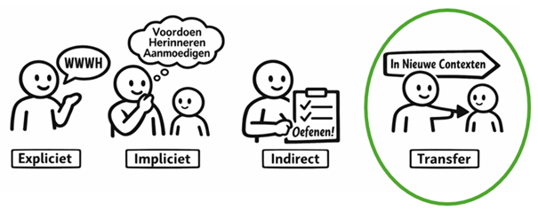
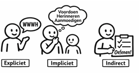
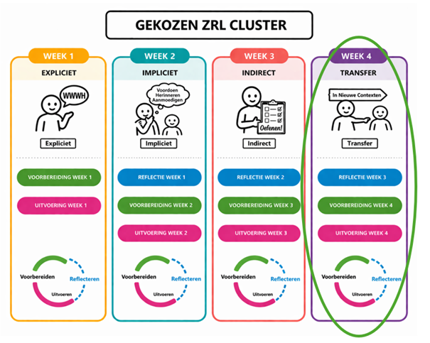
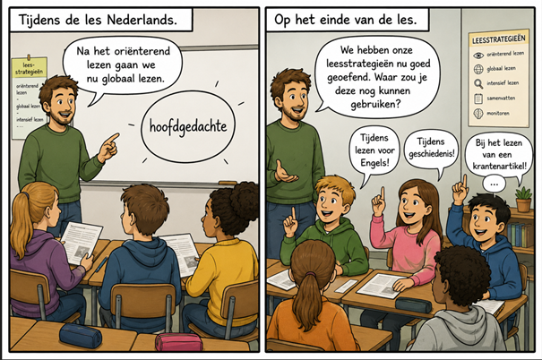
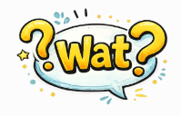
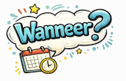
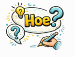
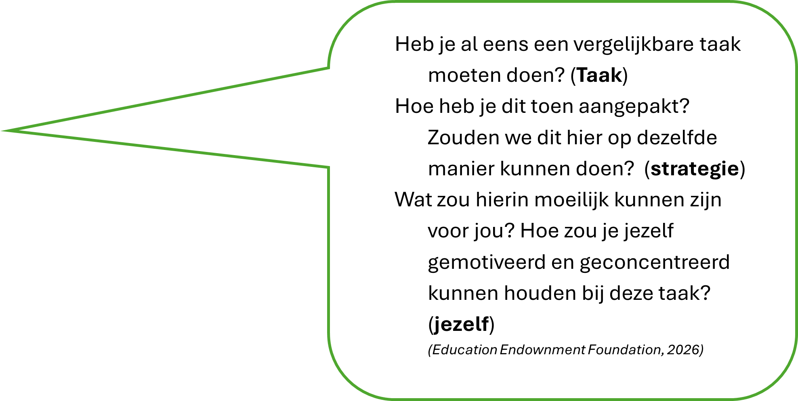

CYCLUS 2 – WEEK 4
Transfer
⏱ Tijdsindicatie: max. 60 minuten
Deze week zoomen we in op de laatste ondersteuningsvorm: transfer.
1. Even terugblikken
A. Overzicht

Vorige week:
- Ontdekten we dat ZRL een teamsport is, waarbij de coach niet alleen (expliciet) uitlegt maar ook voordoet, aanmoedigt EN veelvuldige oefenkansen creëert.
- Leerden we dat oefenen kan ondersteund worden door
- co-regulatie, leren van elkaar en samen aan de slag gaan
- een vaste structuur en routine
- feedback van coach en medeleerlingen;
- tools of hulpmiddelen
- Lieten we ons inspireren door mogelijkheden om indirect te ondersteunen, voortbouwend op de expliciete directe ondersteuning van week 1.
- Werkten we een manier uit om onze leerlingen indirect te ondersteunen (voorbereidingsfase)
- & gingen we – indien mogelijk - vol goede moed aan de slag met de leerlingen in onze klas (uitvoeringsfase)
B. Leerdagboek

Deze week:
- staan we allereerst in ons leerdagboek stil bij hoe deze (uitwerking van) indirecte ondersteuning verlopen is. Wat lukte goed? Waar worstelden we nog mee? Wat leren we hieruit? (reflectiefase)
- zetten we onze motivatie voor de nieuwe week scherp
- en gaan we dieper in op die laatste stap, transfer!

Ga nu eerst naar je leerdagboek via deze link (sla het eerst op jouw pc op voor je erin werkt) of via de bijlage bij de mail.
Klik hier voor het leerdagboek2. Korte herhaling
Deze week zetten we even in op distributed practice*. We herhalen namelijk nog even kort de essentie van alle ondersteuningsvormen die de voorbije weken aan bod kwamen (niet enkel van vorige week) in een korte oefening.
We bekijken vervolgens een aantal voorbeelden van klassituaties. Aan jullie om te kiezen welke soort ondersteuning dit is: expliciet, impliciet of indirect?
*Wist-je-datje: Distributed practice of spacing is een zeer effectieve leerstrategie. Door het oefenen meer te spreiden over de tijd heen onthoudt men het geleerde beter. Dit wordt vaak ingezet door in het begin van de les bvb. een korte quiz te doen waarin de kernboodschappen uit de lessen van even terug, aan bod komen.
Quick recap of spiekbriefje
- Expliciet: WWWH van de vaardigheid (Wat, Waarom, Wanneer, Hoe)
- Impliciet: modellen in handelen, luidop denken, aanmoedigen of herinneren en/of bevragen of aan het denken zetten.
- Indirect: (veelvuldig) oefenen met ondersteuning door co-regulatie, routines, feedback en/of tools.

Was het nu expliciet, impliciet of indirect???
- Een leerkracht houdt een klasgesprek over gedachten die je motivatie soms doen dalen tijdens het leren, en hoe je hiermee kan omgaan. Er volgt een bespreking waarbij de leerkracht uitlegt waarom het belangrijk is om stil te staan bij je motivatie tijdens het leren, hoe je dit kan doen en wat je daarna kan ondernemen om je motivatie weer op te krikken.
- Een leerkracht zet de doelen voor de les op het bord, en vinkt telkens af wanneer een onderdeel afgerond is.
- Een leerkracht voorziet een feedbackkader op elke toets, waarop leerlingen kunnen aangeven op welke manier ze gestudeerd hebben. De leerlingen krijgen de verbeterde toets een weekje voor de nieuwe toets terug, en moeten reflecteren over hun studiemethode en wat ze eventueel anders zouden doen voor de nieuwe toets. Er volgt een klasgesprek over mogelijke manieren om dit thema te studeren.
- De leerkracht laat de leerlingen hun ideale werkplek uittekenen. Er volgt een bespreking over waarom het belangrijk is om je leeromgeving goed in te richten, wanneer je dat kan inzetten, en waar je allemaal op moeten let om dit (voor jou) zo optimaal mogelijk te doen.
- Een leerkracht voorziet een stopmomentje, elke keer wanneer de leerlingen zelfstandig een aantal oefeningen moeten maken. Tijdens dit stopmomentje krijgen de leerlingen een paar vragen om stil te staan bij hun aanpak van de oefening. Ze bespreken hun antwoorden met hun buur. De leerkracht geeft klassikaal nog wat feedback op wat hij ziet en hoort.
- Een leerkracht praat zichzelf door een oefening heen (“ok, wat moeten we nu doen; wat hebben we nodig, wat is weer de volgende stap,...”).
- Een leerkracht verwoordt luidop hoe die een schema opbouwt aan het bord, stap voor stap (“Ik plaats het onderwerp centraal’,…)
- Een leerkracht eindigt elke les met een exit ticket, met daarop telkens een andere vraag zoals bvb. wat zijn de drie kernboodschappen van deze les, stel een toetsvraag op over deze les, duid op een schaal van 1 tot 10 aan hoe goed het concentreren liep,… Leerlingen wisselen hun antwoorden uit, waarna klassikale feedback volgt.
- Een leerkracht laat de leerlingen elke keer er een herhalingstoets is een planning opmaken, met daarin ook hoe ze het studeren zullen aanpakken. De leerkracht voorziet een sjabloon dat hen daarin begeleidt. De leerlingen vergelijken hun planningen met elkaar en klassikale feedback volgt.
- De leerkracht laat de leerlingen aan de hand van een situatieschets nadenken over de leerkuil en hoe je daar uit kan geraken. Er volgt een bespreking over het belang van geloven in jezelf om over het muurtje te kunnen springen en wanneer en hoe je dit geloven in jezelf kan proberen bevorderen.
- Een leerkracht vraagt de leerlingen hoeveel tijd ze denken nodig te hebben voor het maken van een meerdelige opdracht en vraagt hen om bij elke opdracht hun minimum- en maximumtijd op te schrijven.
Klik hier voor de oplossing
Antwoorden:
Expliciete ondersteuning: Bij voorbeelden 1, 4 en 10 wordt de WWWH verduidelijkt, vaak via of na een klasgesprek. De leerlingen oefenen het nog niet echt in.
Impliciete ondersteuning: Bij voorbeelden 2, 6, 7, 11 ondersteunt de leerkracht door te modelleren in zijn handelen (voorbeeld 2) of luidop te denken (voorbeeld 6 & 7) en door te bevragen en aan te moedigen aan tijdsbeheer te doen (voorbeeld 11).
Indirecte ondersteuning: Bij voorbeelden 3, 5, 8, 9 zie je dat het om een routine gaat, waarbij men elke keer de ZRL-vaardigheid oefent volgens een vaste structuur. Ook co-regulatie door het inzetten van de klasgenoten, de inzet van een hulpmiddel of tool en feedback komt aan bod.
3. Vooruitkijken – opzet van de week
Men zegt weleens:
- Wie één balsport kan leert makkelijker een nieuwe balsport aan.
- Wie een aantal vreemde talen kent, kan makkelijker er nog een nieuwe bijleren in vergelijking met wie er geen kent.
Werkt dit ook zo voor ZRL? We hebben het deze week dus over TRANSFER van de ene situatie naar de andere situatie en wat dit betekent in de context van ZRL.

We stonden reeds stil bij vorige week (zie reflectie week 3 in je leerdagboek) en gaan nu dieper in op de transfer:
- WAT transfer is,
- WAAROM dit belangrijk is,
- HOE we dit kunnen bevorderen,
- BEREIDEN we dit VOOR (voorbereidingsfase) &
- VOEREN we dit uit in onze klas (uitvoeringsfase)
4. Transfer
A. Teaser

De leerkracht in dit voorbeeld gaat een specifieke taakstrategie voor het lezen van een tekst gaan inoefenen met zijn leerlingen. Hij laat de leerlingen daarna nadenken over wanneer ze deze leesstrategie nog zouden kunnen gebruiken. Hij triggert dus al de transfer naar andere vakken.
Idealiter weten de leerkrachten Engels en geschiedenis bvb. dat deze leesstrategieën aangeleerd worden en hoe het gebeurt, zodat ze dit ook kunnen triggeren tijdens hun lessen.
De vraag is echter:dienen ze deze strategie op dezelfde manier in te zetten als ze geschiedenis lezen en leren? Of zijn er toch subtiele verschillen? Kunnen leerlingen dit gewoon copy pasten naar een andere setting, of zit het toch nog iets ingewikkelder in elkaar?
M.a.w., wat zijn de do’s en don’ts van transfer?
B. Transfer ondersteunen: wat en waarom?

Transfer gaat over het transfereren of overdragen van het geleerde naar een andere context. Waar de vorige ondersteuningsvormen allemaal binnen dezelfde context plaatsvonden, gaat het nu over het overdragen naar een andere context.
Wat kan er allemaal bedoeld worden met een andere context?
Dit kan gaan over
- Een andere taak: van het plannen voor een groepsopdracht naar plannen voor het studeren.
- Een ander vak: bvb. van jezelf evalueren/controleren voor rekenen naar spelling OF van wiskunde naar Nederlands.
- De thuiscontext: bvb. van leren in de klas naar leren thuis.
- Een vrijetijdscontext: bvb. van je materiaal verzamelen in de klas naar het meenemen van alle benodigdheden voor de dansles.
Sta eens stil bij jezelf: In welke contexten gebruik jij bvb. de ZRL-vaardigheid zelfmonitoring of het bijhouden of je goed bezig bent of iets moet aanpassen in je aanpak? Doe je dat in je klas, wanneer je luistert naar een vriend, wanneer je aan het autorijden bent,....
Waarom is het inzetten op die transfer nu belangrijk?
Alle vorige ondersteuningsvormen leggen eigenlijk de basis voor de transfer. Doch, transfer gebeurt niet altijd automatisch.
Drie belangrijke redenen om de transfer van ZRL-vaardigheden goed te begeleiden zijn de volgende:
- Leerlingen gaan aangeleerde strategieën niet automatisch thuis of in andere contexten ook gebruiken, terwijl dit hen in heel uiteenlopende contexten heel wat kan opleveren. (Leerpunt, 2026)
-
Wanneer we ZRL-vaardigheid veel gaan inoefenen dan treedt er soms onbewust een transfer op naar situaties die heel erg lijken op de oefensituatie. Het gevaar is echter dat men dit doet zonder nadenken en dus niet inziet dat het in de andere situatie net iets anders vraagt … (Peeters, 2022)
Bijvoorbeeld: de leerling heeft geleerd hoe hij een schema kan maken voor het verwerken van de les geschiedenis. De leerling past dit ook toe op het vak aardrijkskunde, waar de focus vooral ligt op het gebruik van de atlas, het interpreteren van kaarten,… Inzetten op bewuste transfer is dus belangrijk.
- Actief inzetten op transfer en dit ondersteunen vermindert de cognitive load, waardoor er meer werkgeheugen over blijft voor de inhoud. (De Bruin et al, 2025)
Noteer op een blaadje
Waar zouden jouw leerlingen de in dit leertraject aangeleerde ZRL-vaardigheden nog kunnen gebruiken? In welk vakken of bij welk types opdrachten?
Hou dit bij voor straks in je leerdagboek.
C. Transfer ondersteunen: wanneer en hoe?
Hoe begeleid je nu de transfer van ZRL-vaardigheden?
Griet en Nathalie leiden dit onderwerp al even in, in een nieuwe video (duurtijd: 7 minuten), deze keer niet @home/hogent maar in een andere context!

Transfer gaat dus enerzijds over zien of beseffen WANNEER je de ZRL-vaardigheden nog kan gebruiken.
Daarnaast gaat het ook over bewust kiezen HOE je deze gaat inzetten, wat nadenken over taken, strategieën en jouw eigen functioneren m.b.t. deze strategieën noodzakelijk maakt.
We bespreken deze twee punten:

1. BEWUSTWORDING over WANNEER je de ZRL-vaardigheden NOG kan gebruiken, door
- te benoemen: Benoem wanneer leerlingen een vaardigheid nog allemaal kunnen gebruiken. De leerkracht uit de strip vroeg aan de leerlingen wanneer ze deze leesstrategie nog kunnen gebruiken maar had dit ook gewoon kunnen benoemen.
- te triggeren: Als de leerkracht geschiedenis de leerlingen herinnert aan de leesstrategieën van Nederlands, triggert hij het transfereren van deze strategieën. Daarnaast is het bevragen van de leerlingen over wanneer, zoals in de strip, ook een manier om dit te triggeren: ‘Wanneer kan je dit nog gebruiken?’; ‘In welke andere vakken kan dit helpen?’,….
- Als schoolteam dezelfde taal gebruiken kan tot slot ook meer bewustwording creëren over wanneer je de ZRL vaardigheden (nog) kan inzetten. Eenzelfde visie rond ZRL en eenzelfde taal hanteren naar de leerlingen toe bevordert de transfer. ZRL ondersteunen is teamwerk! Met een team bereik je zoveel meer. (Sins, 2025; Leerpunt, 2026)
2. BEWUSTWORDING over HOE je de ZRL-vaardigheden NOG kan gebruiken.
De bewustwording over de HOE vraagt om (begeleide) REFLECTIE over 3 vormen van KENNIS, namelijk
Taak
Kennis over taken of opdrachten:
Bvb. Wat vraagt het studeren van Franse vocabulaire? Wat vraagt het studeren van wiskunde? Wat is er anders – en gelijk - aan een taak frans en een taak wiskunde?
Strategie
Kennis over strategieën en wanneer je deze het beste inzet:
Bvb. Waarvoor kan je een schema gebruiken? Waarvoor gebruik je flashcards? Hoe gebruik je flashcards best als het gaat om woordjes, versus bredere concepten?
Jezelf
Kennis over jezelf:
Wat werkt voor mij? Wanneer kan ik mij het beste concentreren? Hoe hou ik mezelf gemotiveerd tijdens wiskunde versus geschiedenis?
(Peeters, 2022; Dijkstra, 2018)


Hoe pakken we dit aan? Door leerlingen bewust te maken van de gelijkenissen en verschillen tussen taken/opdrachten en situaties, ze hierover te laten reflecteren, en te beslissen of ze deze of een andere strategie zullen inzetten.
Op die manier voorkomen we dat leerlingen automatisch een strategie of vaardigheid gaan inzetten, zonder hierover na te denken.
Samengevat: Hoe ondersteun je de transfer?
- Maak leerlingen bewust van WANNEER ze de ZRL-vaardigheden nog kunnen inzetten door:
- Het expliciet te zeggen: “Je kan dit nog gebruiken in de les geschiedenis…”
- Eraan te herinneren of het te bevragen: “Je hebt dit in Nederlands ook gedaan….” “Waar heb je nog zoiets moeten doen?”
- Als team dezelfde woordenschat rond ZRL te hanteren.
- Begeleid het reflecteren rond HOE je deze vaardigheden in de andere context inzet door samen te reflecteren over:
- De taak: heb je al eens een vergelijkbare taak moeten doen? Wat was hier hetzelfde en anders aan?
- De aanpak: hoe heb je dit toen aangepakt? Kunnen we dit nu ook zo doen?
- Zichzelf: Wat werkt/werkte al voor jou? Wanneer kon je je het best concentreren, motiveren,…?
5. Aan de slag
Deze week gaan we vooral in ons leerdagboek aan de slag. We denken na over hoe we de transfer kunnen aanpakken.
Daarnaast voeren we al wat transfer uit, niet het begeleiden van de transfer van onze leerlingen maar wel de transfer van wat wij geleerd en gedaan hebben naar onze collega’s en naar ons collectief.
Twee stappen dus:
- Vul het leerdagboek in
- Bereid een korte terugkoppeling van jouw proces voor onze gezamenlijke vergadering voor. Hoe? Dat mag via een homevideo zijn, via enkele afbeeldingen of foto’s, via een gedicht, via een tekstje, via een schema, een tekening…. Je kiest dus zelf de vorm. Dit hoeft niet langer dan 5 minuten te zijn. In het leerdagboek geven we je enkele vragen mee om je hiervoor te inspireren.
Leerdagboek:
Klik hier6. Vooruitblik
We zien elkaar op de collectieve bijeenkomst op dinsdag 26 mei, van 13u30 tot 15u30 (meer details in het vergaderverzoek)
We kijken er naar uit jullie eindelijk fysiek te kunnen ontmoeten! Heel graag tot dan!